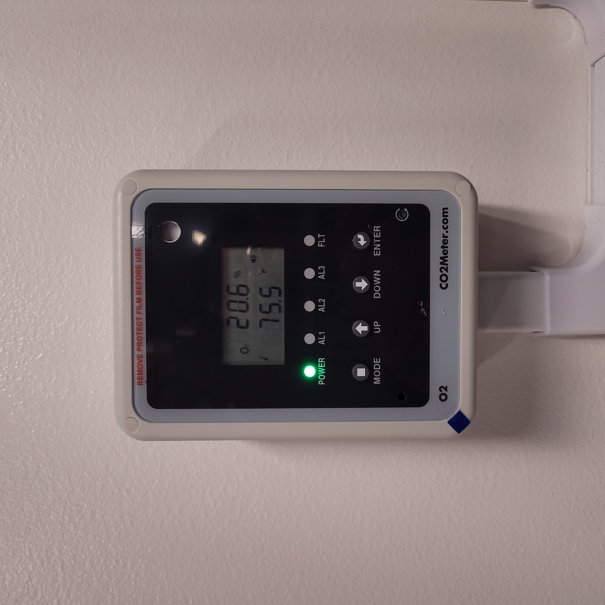
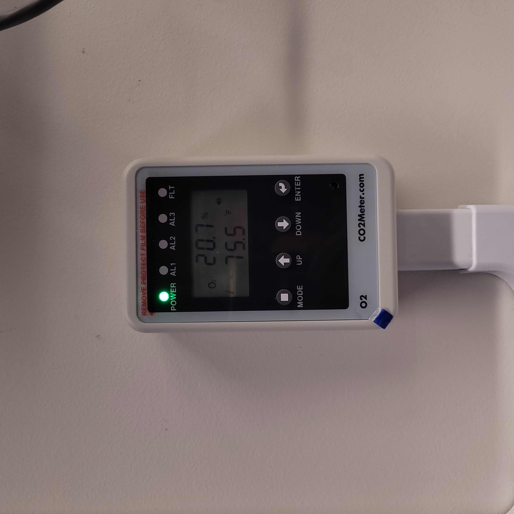

O2 Sensor Testing Protocol
The purpose of this document is to test the functionality of the O2 sensors in Vault-1, Hutch-1, and RF-1.
Staring Conditions
O2 main and remote units only show LED for POWER.
Vault-1 main unit
Vault-1 Control remote unit
RF-1 main unit
Accelerator Lab remote unit
Hutch-1 main unit
Hutch-1 Control remote unit (top)
Astrella enclosure main unit
Hutch-1 Control remote unit (bottom)
Vault-1 Control IONIZING RADIATION INTERLOCK protocase AREA MONITOR OXYGEN lamp is green.
Relay contact #9 in Vault-1 Control west aggregator panel has LEDs on.
Yellow 4 contact blocks in Vault-1 Control west aggregator panel all have continuity with each other.
|  |  |
O2 main unit. ===================================================================== |
O2 remote unit. =================================================================== |
{kind=link}
{kind=link}
Figure 1: This is the O2 sensor pair. The O2 main unit is the sensor, which sends data for display to the O2 remote unit. Both display the same information.
{kind=link}
Figure 2: These are the yellow 4 contact blocks in the Vault-1 Control west aggregator panel. If any of the O2 sensors alarm, these blocks will loose continuity with each other.
Testing Connectivity Between Main and Remote Units
On the face of the main unit and remote unit, press mode until DIAG flashes on the display. Press enter, in return:
All LEDs on the units will light.
The units will alarm.
Vault-1 / Vault-1 Control
RF-1 / Accelerator Lab
Hutch-1 / Hutch-1 Control (top)
Astrella enclosure / Hutch-1 Control (bottom)
Testing Alarming
Using compressed gas (electronics duster will work fine), spray the gas into the main controller sensor until the unit sees an \(O_2\) concentration of less than 19%.
The main and remote units will audibly alarm.
The ELDs for AL1 to flash. More AL# LEDs may flash depending on if you break the 17% and or 15% thresholds. However, the AL1 relay is what is critical.
The Vault-1 Control IONIZING RADIATION INTERLOCK protocase AREA MONITOR OXYGEN lamp will turn red.
Relay contract #9 in the Vault-1 Control west aggregator panel LEDs will turn off.
The correct yellow 4 contact blocks will lose continuity with each other.
Corresponding orange beacon to the unit being tested will flash.
These units have latching alarms. Press the bottom left recessed button to rest the alarm.
Vault-1 / Vault-1 Control
RF-1 / Accelerator Lab
Hutch-1 / Hutch-1 Control (top)
Astrella enclosure / Hutch-1 Control (bottom)
Emergency Tungsten Shutter Crash
Secure Hutch-1.
Set the BEAM SELECT to DIVERGENT.
Spray compressed gas into a O2 unit. In response:
Hutch-1 Control Ionizing Radiation Interlock protocase lamps for Beam Status turn red.
The DIVERGENT shutter (closest, upside down shutter) closed.